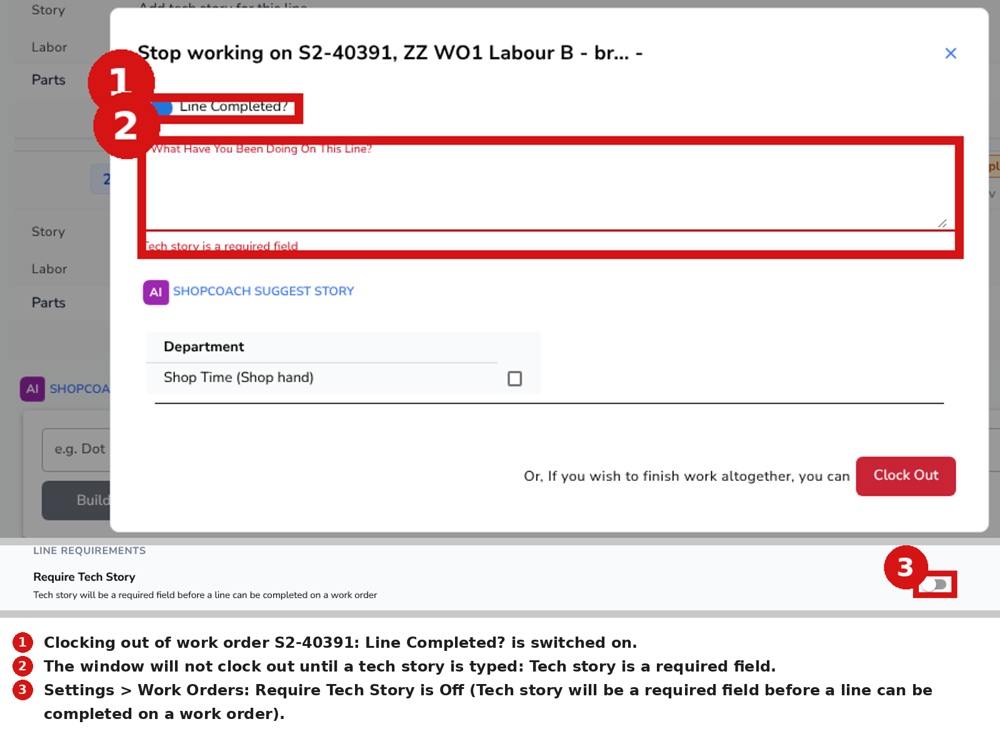

DRAFT - not filed. Classified as a question for Chris (c), not a bug: the written sources do not settle it.
Require Tech Story (Settings > Work Orders) decides whether a line needs a tech story before it can be completed. It is Off, yet the Clock Out window will not complete the line without one.
Work order S2-40396, line "ZZ A1 repro line". Admin pressed Start, then opened the timer at the top (Clock Out window), switched Line Completed? on, left "What Have You Been Doing On This Line?" empty and pressed Clock Out: red text Tech story is a required field, nothing saved. Settings > Work Orders > Require Tech Story: Off.

The Clock Out window opened from the running timer at the top of the screen. Completing a line with its own Complete button does not ask for a story.
Actual: "Tech story is a required field"; clock-out refused until a story is typed.
Expected: Not settled in writing - see the question.
Confluence 771391574 "Simple Flow V2" (11 Sep 2026), Story 5 (SV-9251): "The other line-level requirements stay: tech story, mileage, engine hours, each only when its setting is on" (entry points listed in the same story: "the line itself, the bulk action bar, the completion wizard and clock out"). Same page: "At clock out we will open current prod modal, when technician needs to toggle the Line completed" and "If a tech story is required and empty, it is required at clock out."
Staging (app.staging.shopview.com), build v26.45.4-f3d3d2d, 16 Nov 2026, location "ZZAUTOTEST R365 Location C with a name longer than the chip", signed in as Admin. Browser and test machine set to the location's time zone (America/Edmonton).